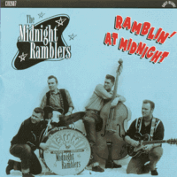

the Midnight Ramblers - Ramblin' At Midnight (Album, 2000)
01 - Wide Open Road (2:27)
02 - You Can't Make Love (2:34)
03 - Pink Cadillac (2:15)
04 - Little Bit More (2:01)
05 - You Don't Care (2:26)
06 - Sixteen Chicks (1:53)
07 - Rock Boppin' Baby (2:11)
08 - Lone Gone Night Train (2:01)
09 - All The Time (2:07)
10 - Heartbreakin' Love (2:14)
11 - I'm Ready (3:00)
12 - It Was Spring (1:48)
13 - Rambler (1:36)
14 - Is It Me (2:08)
15 - Long Black Train (2:44)
16 - Love My Baby (2:54)
17 - Born To Love One Woman (2:13)
18 - Drinkin' Wine (3:03)
19 - Let Me Love You (2:35)
20 - Rampage (2:07)
© Rarity Records :: [C192607]
Notes
Review
173/366 (Project 366)
Wonderful authentic Rock'n'Roll and Rockabilly. Country themes are also there! Lovely.